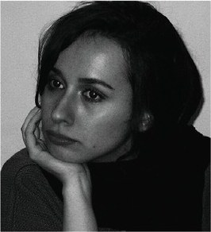
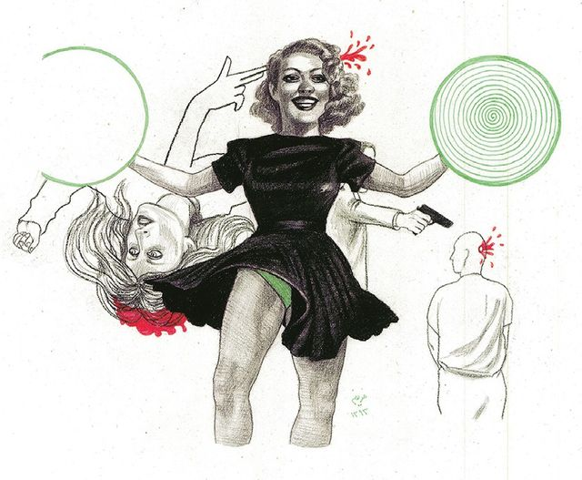
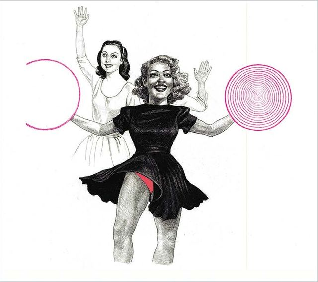
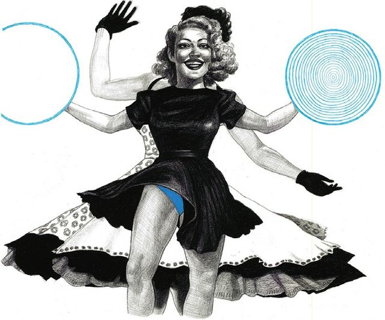
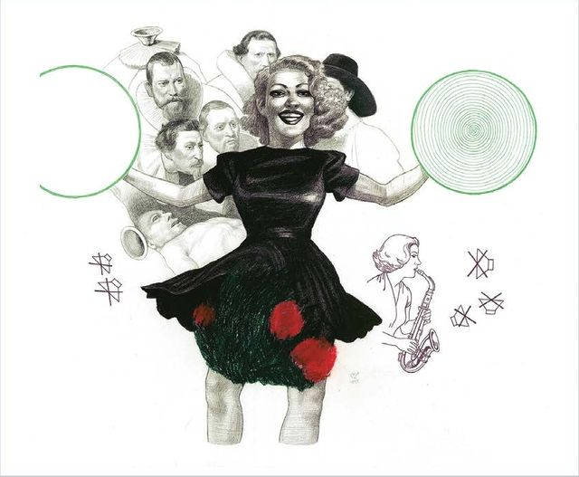
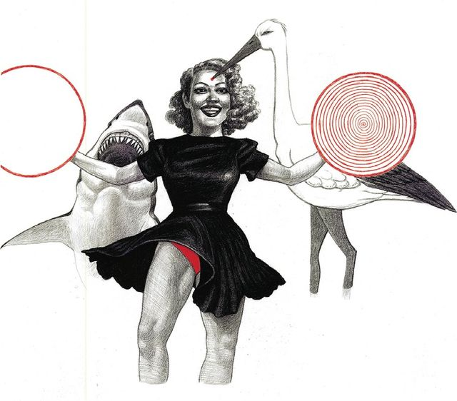
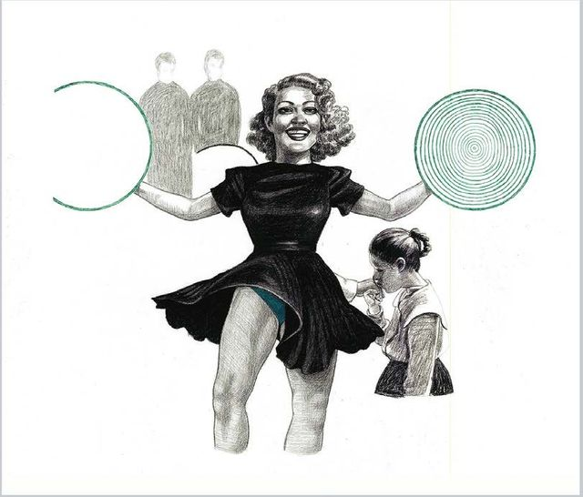
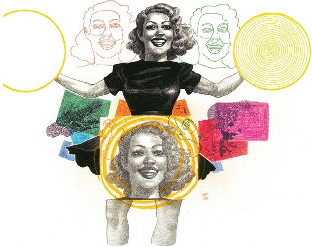
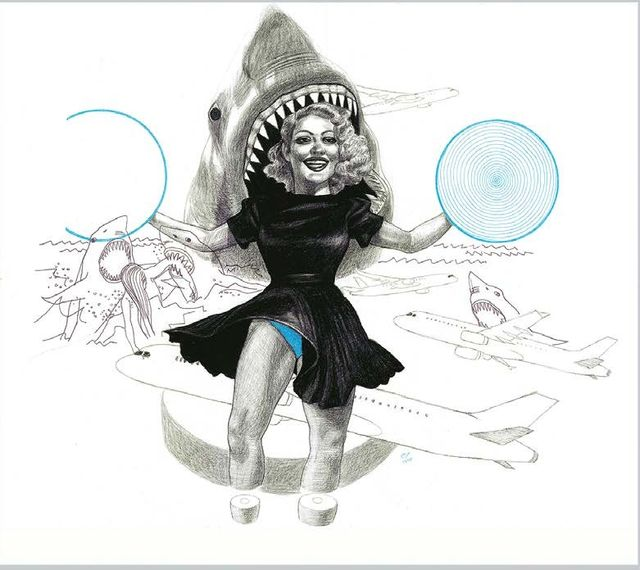

Artist
Maryam Sabbaghpour

- Born1989
- FromIran
- Works9
- Dated2014
StatementAbout the work
Zynar
Zynar series is about a beautiful girl. I painted it in 1392. This collection is a experience of repeat in several paintings that whether repeat of object can be stopped to see it or not. Repeat in the Zynar series is not exactly repeat but in each painting, proportion to what it considered a special point of the story of a beautiful girl noted. For ease of understanding used of iconic images in every work, and images used selectively and with the primary goal. With each iteration of the beautiful girl, I believe that special meaning induced, and does not have the same function as previous girl. If we want account it repeat we can say not the repeat, but also deepen. When we read a book for the first time, we realize and remember overview of its contents, but when the study was repeating the next time there is more finer points and this is because of the focus that we have been found in previous times. There is opportunity to greater accuracy in backend image on the repeat and gained more knowledge. We understand the nuances and newer image. In my idea by repeating of beautiful girl, there is a chance that it appears beauty every time more than once previous. The trend to beauty is unfailing and it was manifesting often in art in the form of beautiful creating. I like painting beauty as one of the issues of art is the beauty creating. By creating beauty my sense of beauty has been satisfying. What is beauty? Is formula for true beauty possible? Is my beautiful daughter beautiful? Answering these questions is not easy, perhaps there is no answer, because beauty is understood but the ability to describe it is hidden.
Maryam Sabbagh Poor
Works9 artworks

















History of experienceBiography · education · exhibitions · awards
Education
- 2007–2012B.A, in painting at Tehran University of Art
- 2003–2007High School diploma in Graphic Design at Fatemi High School|Gilan – Iran
Joint exhibitions
- 2013Drawing Week Homa Art Gallery|Tehran – Iran
- 2013Spring Group Show Aaran Art Gallery|Tehran – Iran
- 201316th International Open Woman Made Gallery|Chicago
- 2014Montakhab-e Nasl-e No Shirin Art Gallery|Tehran – Iran
- 2014Damonfar Painting Biennial Mellat Art Gallery|Tehran – Iran
- 2014The feeling of happiness Homa Art Gallery|Tehran – Iran
- 2015Omnibus The Mine Gallery|Dubai
- 2016Insomnia O Art Gallery|Tehran – Iran
Awards and achievement
- 2012Appraised in the fourth edition of the Damonfar Painting Biennial
- 2015Appraised at Muftah Magazine
Source: the Sobhan Gallery artist catalogue “Maryam Sabaghpour.pdf”.